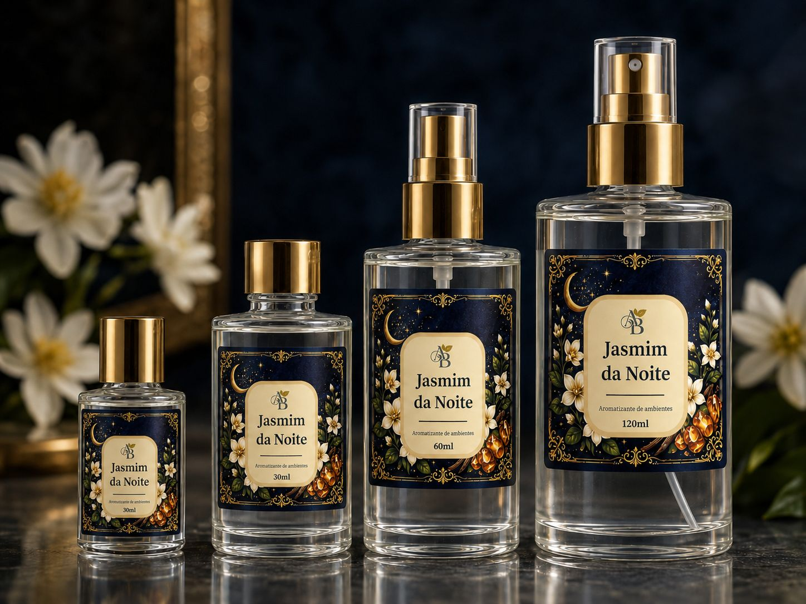

A Essência da Noite,
Capturada para Você.
Nossa coleção Jasmim da Noite transforma qualquer ambiente com um toque de sofisticação e mistério.
Descubra a Fragrância
Jasmim da Noite
Uma composição floral inebriante, com notas de jasmim branco, âmbar e um toque sutil de especiarias. Criada para noites memoráveis e ambientes que contam histórias.
Disponível em 30ml, 60ml e 120ml.
Ver detalhes